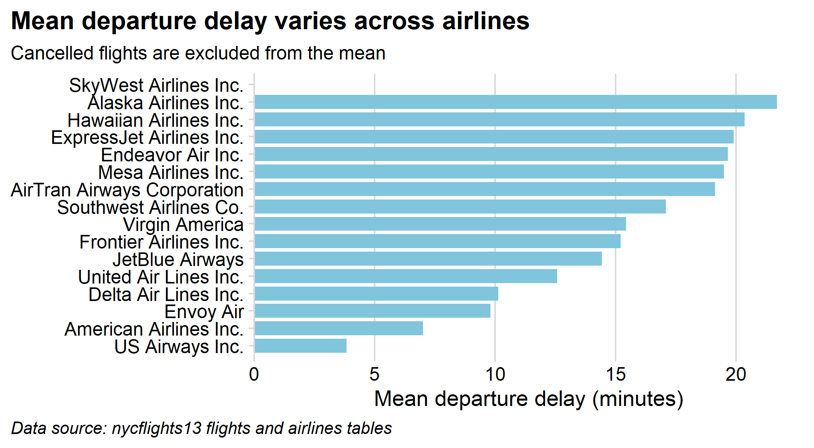

flights <- read_csv(file.path('data', 'flights.csv'))
airlines <- read_csv(file.path('data', 'airlines.csv'))Agentic Workflows & GitHub
EMSE 4572/6572: Exploratory Data Analysis
Practice 1: GitHub Desktop
Checkpoint: your solo loop from HW1
Confirm that:
- Your
eda-practicerepo shows up in GitHub Desktop - The same repo exists on GitHub.com
If any of these fail, flag it now. The steps are in HW1.
Commit to your partner’s repo
Pair up with a neighbor and work through the collaboration loop. You’ll both push straight to the mainbranch.
- In your
eda-practicerepo on GitHub.com: Settings › Collaborators → add your partner’s GitHub username → they accept the emailed invite - Swap repo links. In GitHub Desktop: File › Clone Repository → clone your partner’s repo
- Edit their
README.mdin Positron → Commit tomain→ Push - Back in your own repo, click Fetch origin, then Pull
- Open
README.md— your partner’s edit should be there
Write down the URL of your partner’s repo, and what you changed in it:
Your answer here
Look at your repo’s History in GitHub Desktop. How can you tell which commit was your partner’s, and what it changed?
Your answer here
Practice 2: Your first agentic project
Direct an agent to build a multi-page Quarto website about someone you admire — a scientist, athlete, artist, whoever.
- In GitHub Desktop, make a new repo called
my-website(include aREADMEfile). Make it public, and publish it to GitHub. - In Positron: File › Open Folder… and pick that repo’s folder.
- In the terminal pane, type
claudeand press Enter. - Prompt Claude for a multi-page Quarto website about your person.
- When it’s done, ask it to render the site (if it didn’t already).
- Open
index.htmlin the_sitefolder. - Commit + push to GitHub.
Extra: publish with GitHub Pages
- Ask Claude to change the Quarto output folder from
_sitetodocs(editoutput-dirin_quarto.yml), then re-render. - Commit + push.
- On GitHub.com: Settings › Pages → Source: Deploy from a branch, Branch:
main, Folder:/docs→ Save. - Wait a minute, then visit the URL GitHub shows at the top of that page.
Your site’s URL:
Your answer here
Practice 3: Modes & slash commands
Still in your my-website repo:
- Run
/init— then open theCLAUDE.mdit wrote and read it. - Run
/modeland/effortto see your options. - Ask for a small change (a new page, a navbar tweak) at
/effort low. - Press shift + tab into plan mode, then ask for something harder — e.g. “collapse everything into a single-page website” — at
/effort high. Read the plan before you approve it. /compact, then keep going. Does it still know what you’re building?/clear, then ask “what am I working on?”- Commit + push.
Practice 4: Skills
A skill is a slash command you define that teaches the agent one of your recipes. Today’s class folder ships one: my-chart-style.
- Ask Claude to copy the
my-chart-stylefolder from this class folder into.claude/skills/in your project (create the folder if it doesn’t exist). - Come up with a chart you’d like to see from
data/flights.csv. - Ask for that chart without the skill, then again invoking
/my-chart-style. - Modify the skill — a specific color for all charts, a different theme, whatever — and re-create the chart.
The data:
Have the agent create a plot without the skill here:
# Write code hereThen have the agent create a plot with the /my-chart-style skill here:
# Write code herePractice 5: Which airline should you avoid?
The code will run, the chart will probably look great. But the answer may be wrong.
Ask Claude to rank the airlines by mean departure delay — joining flights.csv to airlines.csv for the names — and chart it.
delay_by_airline <- flights |>
left_join(airlines, by = "carrier") |>
group_by(carrier, name) |>
summarize(
mean_dep_delay = mean(dep_delay, na.rm = TRUE),
.groups = "drop"
) |>
arrange(desc(mean_dep_delay))
delay_by_airline#> # A tibble: 16 × 3
#> carrier name mean_dep_delay
#> <chr> <chr> <dbl>
#> 1 AS Alaska Airlines Inc. 21.7
#> 2 HA Hawaiian Airlines Inc. 20.4
#> 3 EV ExpressJet Airlines Inc. 19.9
#> 4 9E Endeavor Air Inc. 19.7
#> 5 YV Mesa Airlines Inc. 19.5
#> 6 FL AirTran Airways Corporation 19.1
#> 7 WN Southwest Airlines Co. 17.1
#> 8 VX Virgin America 15.4
#> 9 F9 Frontier Airlines Inc. 15.2
#> 10 B6 JetBlue Airways 14.4
#> 11 UA United Air Lines Inc. 12.6
#> 12 DL Delta Air Lines Inc. 10.1
#> 13 MQ Envoy Air 9.81
#> 14 AA American Airlines Inc. 7.01
#> 15 US US Airways Inc. 3.83
#> 16 OO SkyWest Airlines Inc. NaNdelay_by_airline |>
ggplot(aes(x = mean_dep_delay, y = reorder(name, mean_dep_delay))) +
geom_col(fill = "#80C5DCFF", width = 0.8) +
scale_x_continuous(expand = expansion(mult = c(0, 0.05))) +
labs(
x = "Mean departure delay (minutes)",
y = NULL,
title = "Mean departure delay varies across airlines",
subtitle = "Cancelled flights are excluded from the mean",
caption = "Data source: nycflights13 flights and airlines tables"
) +
theme_minimal_vgrid(font_family = "sans") +
theme(
plot.title.position = "plot",
plot.caption.position = "plot",
plot.caption = element_text(hjust = 0, face = "italic"),
panel.background = element_rect(fill = "white", color = NA),
plot.background = element_rect(fill = "white", color = NA)
)
Which airline does the chart say is worst?
Your answer here
Now interrogate it
Don’t ask the agent whether it’s right Check it a way it can’t fake.
How many flights is each bar calculated from?
# Write code hereYour answer here
What happened to the cancelled flights? (A cancelled flight has NA for dep_delay.) How many did each airline have, and what share of its flights is that?
# Write code hereYour answer here
Is any airline missing from the chart? Compare the carriers in flights to the carriers in airlines, and to the ones that actually made it into the plot.
# Write code hereYour answer here
Fix it
Tell Claude specifically what’s wrong, and have it fix the chart.
# Write code hereDoes the fixed chart change your answer about which airline to avoid?
Your answer here
Verification checklist
Run this every time — it’s the skill this whole course is really about.